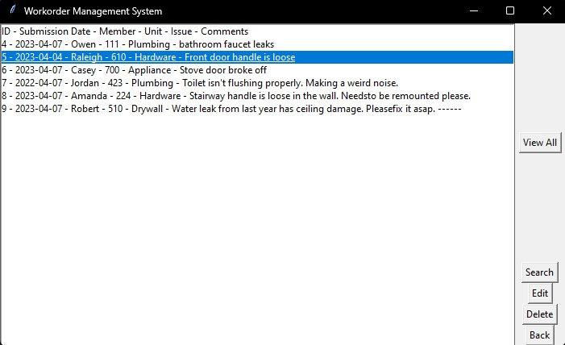
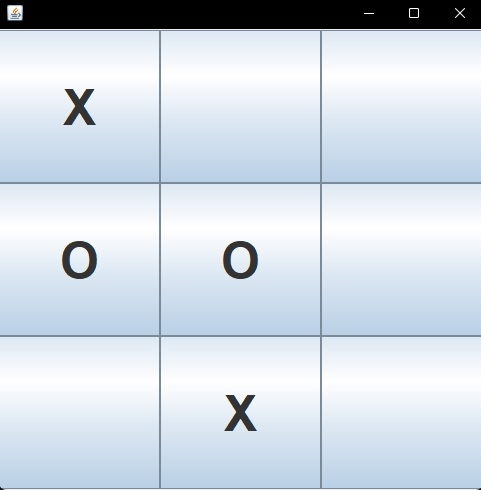

Projects
Workorder Management System

For this project, we were tasked to make a management system. I chose to manage repair workorders
because at the time of writing this, I'm working part-time as a maintenance worker at a building.
It allows for basic workorder creation, editting, and deletion all with a simple UI. Techstack: Python (Tkinter/Sqlite3)
View Project
Minimax Tic-Tac-Toe

For this project, my team and I developed a Tic-Tac-Toe game using Java. For the GUI, we used Swing because we hadn't used it before.
The menu allows for the user to choose between a human player, a computer player using random inputs, or a computer player using the minimax algorithm.
It was our introduction to "AI" and recursive algorithms.
Techstack: Java (Swing/Java)
View Project
Employee Purchases Manager

For this project, I was tasked to create a console application for a store that can manage employee purchases.
We were asked to give different discounts to certain employement types, and to track total purchases versus total discounts.
I went above and beyond by using best object oriented programming practices, which was not a requirement, and not taught in the course
for another few weeks. Going this design route allowed for tracking to be a lot easier, however it did make
data validation in the menu system a bit more difficult.
View Project